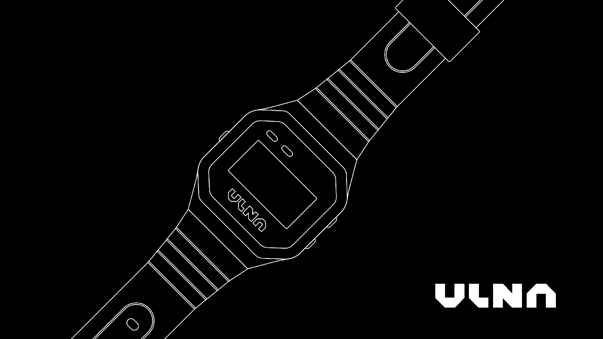
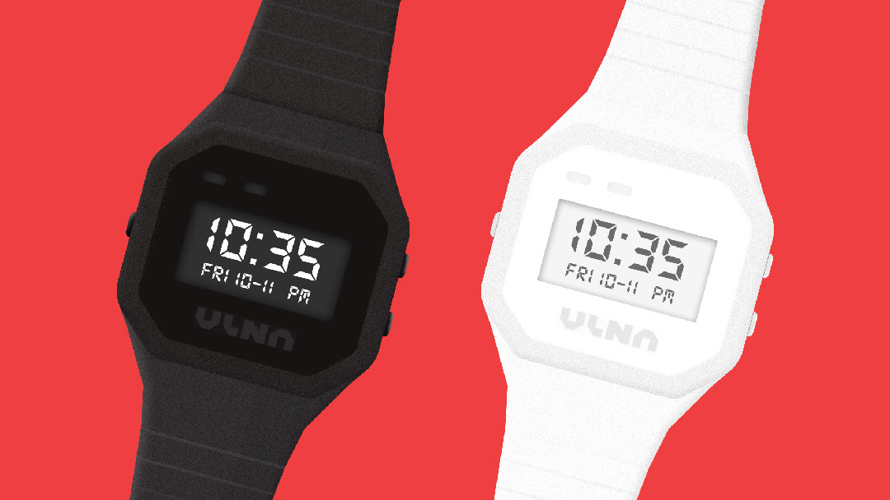

01. HOME — selected works → 02. ABOUT — more info → 03. RESOURCES — free downloads → 04. TWITTER — hot takes → 05. DRIBBBLE — more design → 06. LINKEDIN — business time →
ULNA is a fictional wristwatch brand I created for a Dribbble × Frontify contest back in 2019. The prompt was to create a faux brand and use Frontify to showcase the brand guidelines. My submission was named one of the winners of the contest and landed me a brand new Macbook Pro!
The brand was inspired by my love for minimalist, retro digital watches. To flesh out the brand, I created the logo, a watch concept, a website mockup, and chose brand colors and typography.
READ MY FRONTIFY INTERVIEW →

